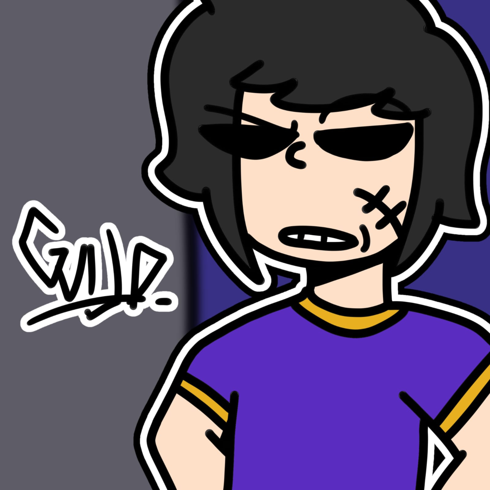
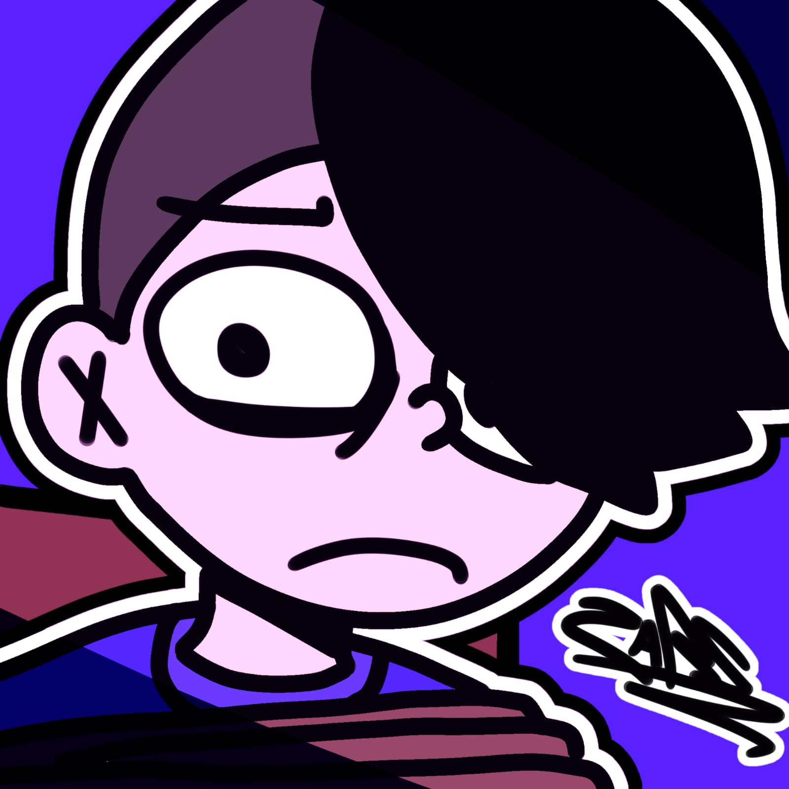
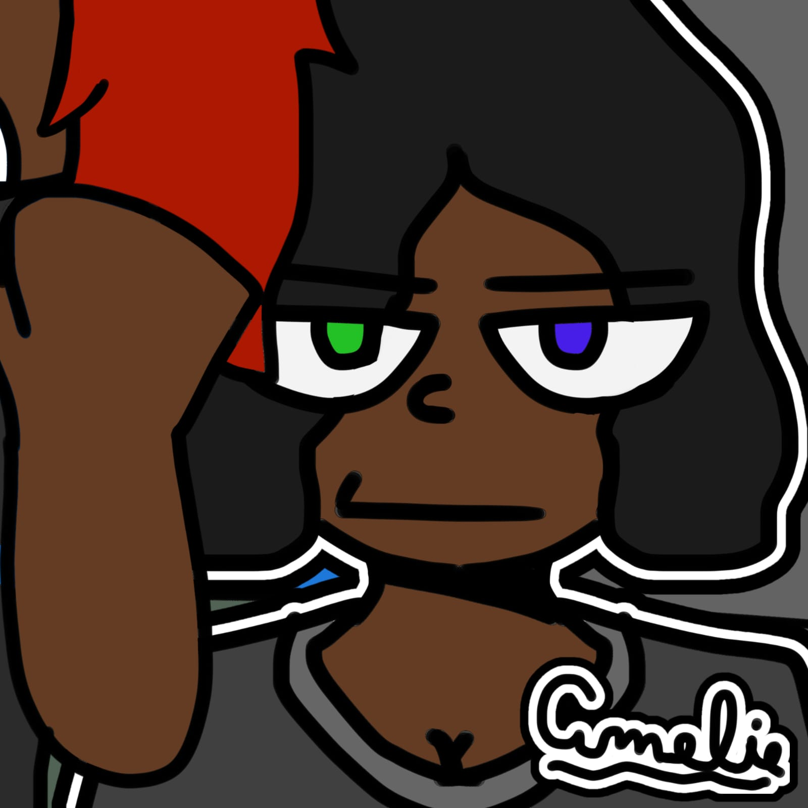
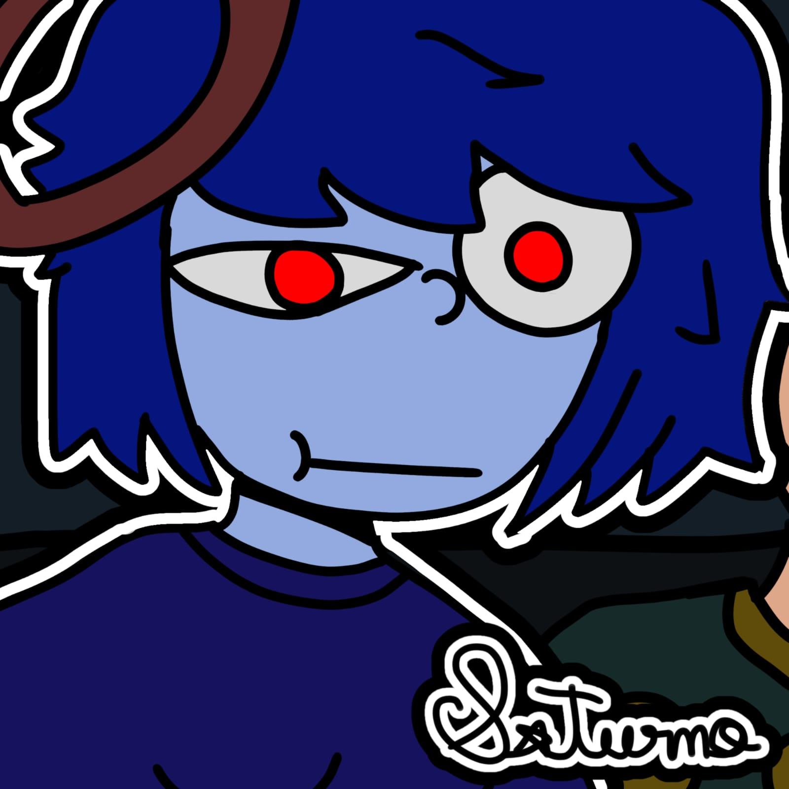
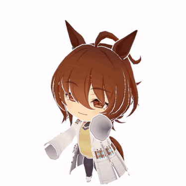
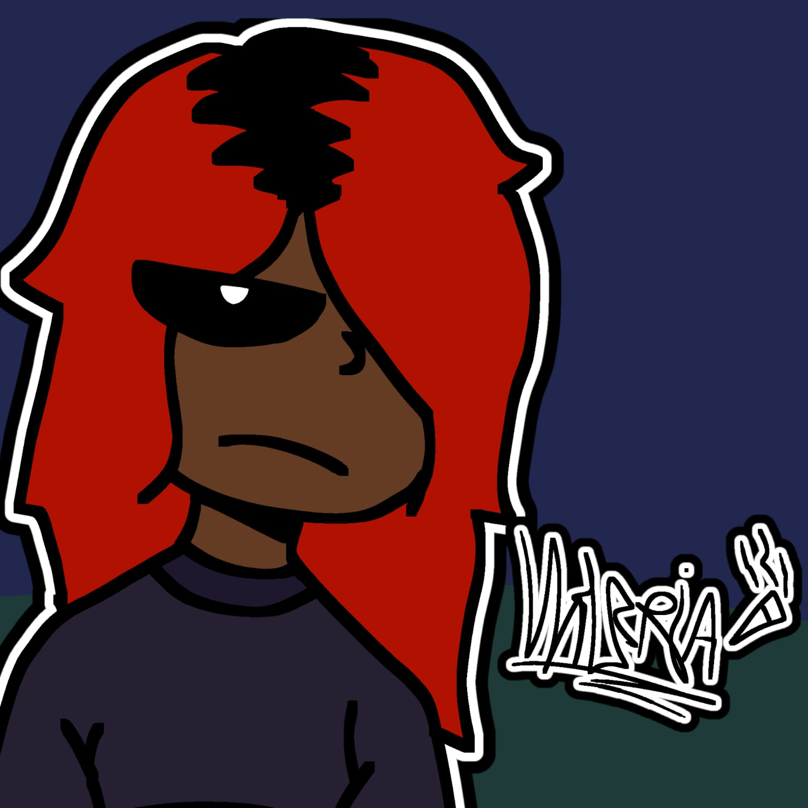
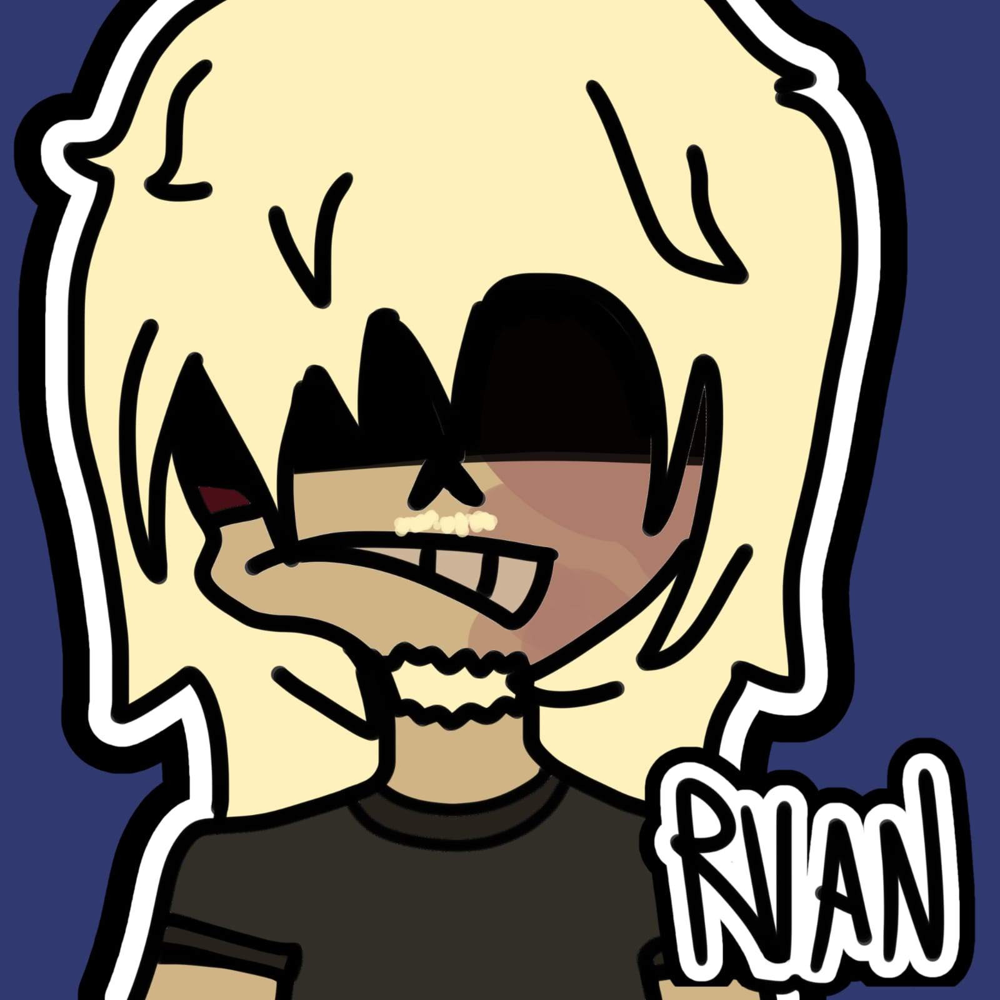
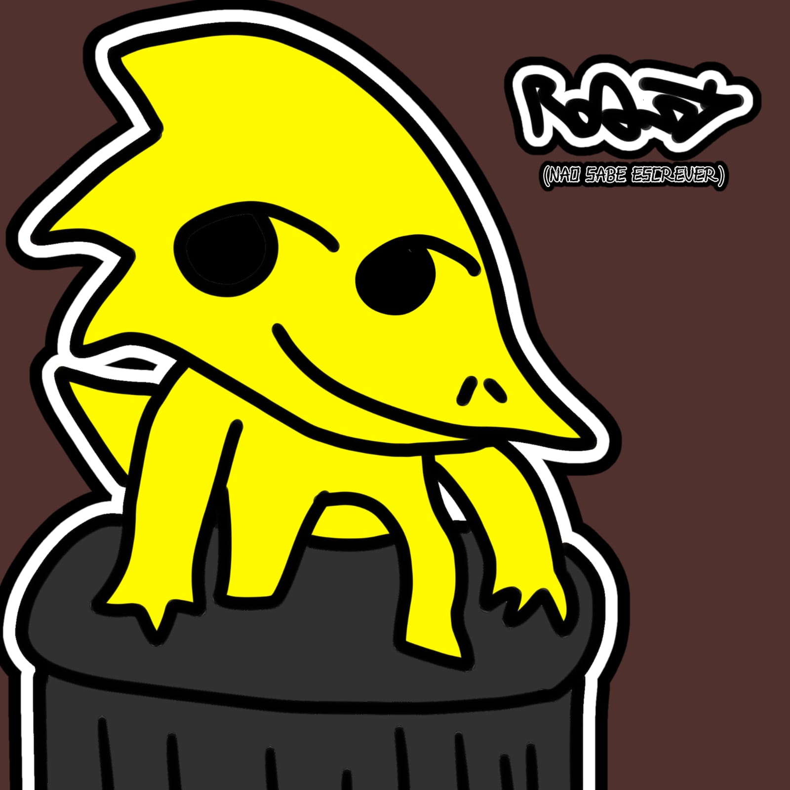

Guijo Mynes, O robô

- Guijo era um humano que foi morto por Tasha Reis, que o transformou em um robô bem daora. Não questione os olhos pretos sem fundo dele.
- Dublador: @Marcossoos_souza
- Hobbies: Atropelar Idosas.
Zabs, O Velocista

- Zabs foi abandonado em uma floresta quando ainda era criança. Lá, ele aprendeu a se virar sozinho e acabou se tornando essa porra burra aí. Isso bagunçou bastante a cabeça dele. Será que ele vai aguentar?
- Hobbies: Jogar mineirinho
Amelie Reis, a... sei lá

- Amelie é a mais responsável do grupo e também a que menos aparece (por isso que essas merdas todas acontecem). Ela tem poderes de gelo e cura, mas quase não usa. Prefere resolver as coisas usando seu machado fodástico.
- Hobbies: Não ter quase nenhuma aparição.
Saturno, a Yandere

- Saturno, irmã de Vênus, também é uma alienígena do planeta GLOBGLUSGABLAH. Ela é fanática por Zabs, mas o sentimento não é correspondido. Façam fanarts boiolas dos dois, por favor.
- Dubladora: @Asa_senteavida
- Hobbies: Pensar no Zabs todo o dia.
Venus, A Alienígena

- Vênus, irmã de Saturno, é uma alienígena do planeta GLOBGLUSHGABLAH. Ela é namorada do Guijo e não apareceu em nenhum episódio de Guijo Chaos (Só no Guijo Clássico)
- Hobbies: Fazer bebês com o Guijo 💀...
Valeria Reis, a criminosa

- Valéria é a irmã da Amelie. Ela é conhecida por seus assaltos e pelo contrabando de... órgãos. Ela fuma tanto que a fumaça foi para os olhos ao invés dos pulmões.
Ruan, o Guarda Prateado

- Como descrever o Ruan? Ugh... bom. Na infância, ele sofreu um grande acidente no rosto, que o deixou deformado. Ele também perdeu seu irmão mais novo, Ryan Mynes, que foi assassinado por Tasha Reis. Então... Ruan é irmão do Guijo? Tecnicamente, sim. Antes, ele usava uma armadura totalmente dourada (Guijo Clássico), mas agora, em Guijo Chaos, trocou para uma armadura prata e ciano que, sinceramente, ficou bem melhor.
- Hobbies: Chegar bêbado em casa toda noite e bater no Robert. Aliás, ele é policial de dia e misterioso á noite.
Robert, a Largatixa

- Robert, a Lagartixa, é uma... lagartixa (óbvio). Ele é cuidado por Ruan, o Guarda Prateado. Robert tinha um físico bem magro, mas depois do episódio 6, “Roberto, o Lagarto”, ele treinou junto com Clarinete, o autista, e ficou forte.
- Hobbies: Infernizar a vida de todos.